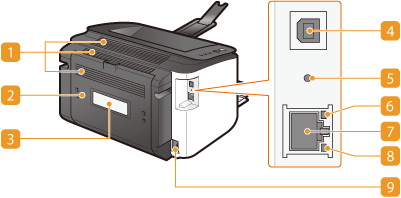

Back Side

 Ventilation slots
Ventilation slots
Air from inside the machine is vented out to cool down the inside of the machine. Note that placing objects in front of the ventilation slots prevents ventilation. Installation
 Rear cover
Rear cover
Open to remove jammed paper. Clearing Paper Jams
 Rating label
Rating label
The label shows the serial number, which is needed when making inquiries about the machine. When a Problem Cannot Be Solved
 USB port
USB port
Connect a USB cable when connecting the machine and a computer.
 Reset button
Reset button
You can also press this key while turning ON the power to initialize the system management settings. Initializing by Using the Reset Button
 ACT indicator
ACT indicator
Flashes when data is sent and received via wired LAN.
 LAN port
LAN port
Use a LAN cable to connect to a hub (or router). Connecting to a Wired LAN
 LNK indicator
LNK indicator
Lights up when the machine is connected to wired LAN.
 Power socket
Power socket
Connect the power cord.